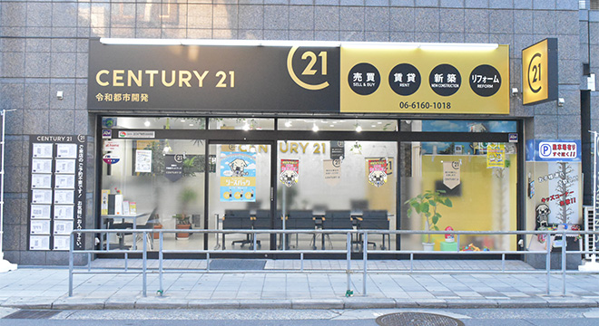
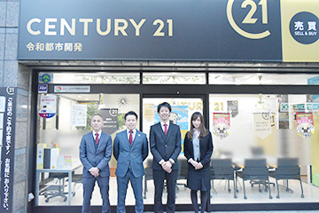

株式会社令和都市開発について

こちらでは、東淀川区の不動産会社「株式会社令和都市開発」の会社案内や考え方をご紹介しています。常にお客様を第一に考えて、可能な限りご要望に合わせた対応をしていますので、不動産売却に関するお悩みがあるようならお気軽にご相談ください。
また、お客様から寄せられるよくあるご質問もこちらに掲載してあります。不動産売却や査定などについて不明点がありましたら、まずはこちらをご覧ください。
株式会社令和都市開発からのお客様へご挨拶
この度は株式会社令和都市開発のホームページをご覧いただき、誠にありがとうございます。私たちは東淀川区を中心としたエリアで不動産売却や仲介売却、任意売却などをサポートしている不動産会社です。東淀川区を中心としたエリアをすみずみまで知り尽くし、多くの実績を積み上げてきた自信をもとに、地域に合わせた「正しい査定」でお客様の不動産売却をサポートいたします。

現在お客様が抱えている不動産のお悩みや、売却の希望にはどのようなものがあるでしょうか？ 私たちが基本としているのは、お客様を第一に考えた「顧客第一主義」です。まずはお悩みや希望をじっくりとお聞きし、可能な限りご要望にお応えしています。熱意を持って丁寧に対応しますので、不動産関係のことでしたら、どんなささいな点でもお気軽にご相談ください。
会社概要
| 会社名 | 株式会社令和都市開発 |
|---|---|
| 代表者名 | 石原 利憲 |
| 所在地 | 〒533-0004 大阪市東淀川区小松1-10-22 |
| 電話番号 | 06-6160-1018 |
| FAX | 06-6160-1019 |
| 営業時間 | 10:00～20:00 定休日：水曜日 |
| メールアドレス | c21@reiwa-018.com |
| 宅地建物取引業者 免許証番号 |
大阪府知事（1）第61096号 |
| 事業内容 | 不動産の売買・賃貸および仲介・管理 |
アクセス
阪急電車京都線 上新庄駅から徒歩約5分
お客様からよくあるご質問にお答えします
不動産売却（仲介・買取・相続・任意）全般について
- 高く売るためのコツはありますか？
- 不動産売却は選択する売却方法によって変わってきますので、高く売りたい場合は仲介売却を利用するのがおすすめです。もちろん、買い主様が見つからなければ売れませんので、売却活動にも力を入れる必要があります。
- ご近所に知られないように売却できますか？
- 売却活動をすると、広告などで知られてしまう可能性もあります。ただし、お客様のご要望に合わせて、ご近所に知られないような売却活動の実施も可能です。
- 不動産売却の販売活動ではどのようなことをするのでしょうか？
- 新聞折り込みチラシやインターネットなどで広く宣伝するとともに、地域向けの発信も積極的に実施していきます。
- 販売活動の費用は売り主側の負担ですか？
- いいえ。不動産会社には成功報酬として仲介手数料を支払うのみで、販売活動の費用はいただいておりません。
- 不動産売却の前にリフォームをしたほうがいいのでしょうか？
- 基本的にリフォームは不要です。しかし、不動産の老朽化が進んでいる場合など、リフォームしたほうが良い場合もあります。
不動産の査定に関すること
- 査定ではどんな点を調べますか？
-
不動産の査定方法には「簡易査定」「訪問査定」の2種類があり、それぞれ以下のような内容になっています。
- 簡易査定：市場動向や法制規制などをもとに、簡易的に査定額を算出。
- 訪問査定：直接現地を見て、建物の状態や周辺環境から査定額を算出。
- 査定前にしておくことはありますか？
-
査定に必要な情報や書類を、事前にご用意いただけるとスムーズです。
【情報】
- 不動産の所在地
- 不動産の種類（一軒家なのかマンションなのかなど）
- 不動産の状況（現在住まわれているのか、空き家になっているのかなど）
- 不動産の面積（土地面積・建物面積など。マンションの場合は専有面積）
- 建物の築年数
- 売却の希望時期
- 不動産の名義
【書類】
- 登記簿謄本（土地と建物）
- 公図・測量図
- 建物図面
- 権利証
- 査定後は必ず売却しなければいけないのでしょうか？
- いいえ、査定をしたからといって売却は強要しておりません。査定の結果を見て、お客様自身がご判断ください。
不動産を売却する際にかかる費用や税金について
- 不動産が売却できなかった場合でも費用はかかりますか？
- いいえ。売れなかった場合、基本的に費用はかかりません。広告費や内覧などで必要になる費用は、仲介手数料に含まれています。ただし、特別なサービスをご利用になった場合は、売却できない状況であっても費用が発生するケースがあります。
- 不動産が売却できた場合、お金が支払われるタイミングはいつになりますか？
- 一般的には、契約時と引き渡し時の2回に分けて支払われます。詳しくは担当者にお尋ねください。
- 不動産売却では、どんな費用がかかりますか？
- 基本的な費用は、印紙税や司法書士費用、仲介手数料です。その他にも、不動産を売却することで利益が出た場合は、所得税が発生します。